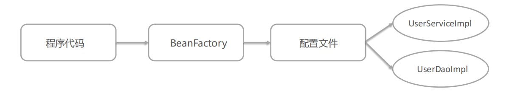
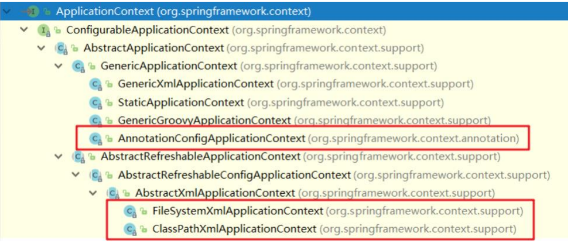
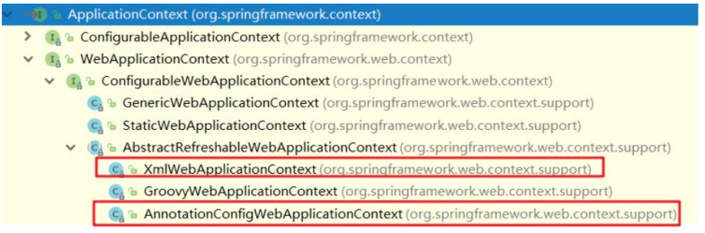

2-接口BeanFactory和ApplicationContext
接口BeanFactory和ApplicationContext

BeanFactory
IOC 操作步骤
- 导入Spring 的 jar 包或 Maven 坐标
1 | <!--Spring核心--> |
- 定义 UserService 接口及其 UserServiceImpl 实现类
1 | public interface UserService {} |
- 创建 beans.xml 配置文件，将 UserServiceImpl 的信息配置到该xml中；
1 | <bean id="userService" class="com.itheima.service.impl.UserServiceImpl"></bean> |
- 编写测试代码，创建 BeanFactory ，加载配置文件，获取 UserService 实例对象
1 | //创建BeanFactory |
DI 操作步骤
- 定义UserDao接口及其UserDaoImpl实现类
1 | public interface UserDao {} |
- 修改UserServiceImpl代码，添加一个
setUserDao(UserDao userDao)用于接收注入的对象（需要有一个 set 方法来设置注入，比如类里面的成员变量接收）
1 | public class UserServiceImpl implements UserService { |
- 修改 beans.xml 配置文件，在
UserDaoImpl的<bean>中嵌入<property>配置注入
1 | <bean id="userService" class="com.itheima.service.impl.UserServiceImpl"> |
- 修改测试代码，获得UserService时，setUserService方法执行了注入操作
1 | //创建BeanFactory |
ApplicationContext
ApplicationContext 是 Spring 容器，内部封装了 Beanfactory
开发时，xml 配置文件习惯写成 applicationContext.xml
同样的配置 xml 文件
1 | //创建ApplicationContext,加载配置文件，实例化容器 |
BeanFactory是Spring的早期接口，称为Spring的Bean工厂，ApplicationContext是后期更高级接口，称之为 Spring 容器
ApplicationContext在BeanFactory基础上对功能进行了扩展，例如：监听功能、国际化功能等
Bean创建的主要逻辑和功能都被封装在BeanFactory中
ApplicationContext与BeanFactory既有继承关系，又有融合关系
Bean的初始化时机不同，原始BeanFactory是在首次调用getBean时才进行Bean的创建，而ApplicationContext则是配置文件加载，容器一创建就将Bean都实例化并初始化好
继承体系
BeanFactory 实现 - DefaultListableBeanFactory
其中 ApplicationContext 维护的也是 DefaultListableBeanFactory
ApplicationContext
如果只在 Spring 基础环境下，只有三个能直接用
AnnotationConfigApplicationContext 注解配置类
FileSystemXmlApplicationContext 磁盘路径xml配置
ClassPathXmlApplicationContext 类路径xml配置

如果多导入 Spring-web
1 | <dependency> |
XmlWebApplicationContext 类路径下的 xml 配置
AnnotationConfigWebApplicationContext
